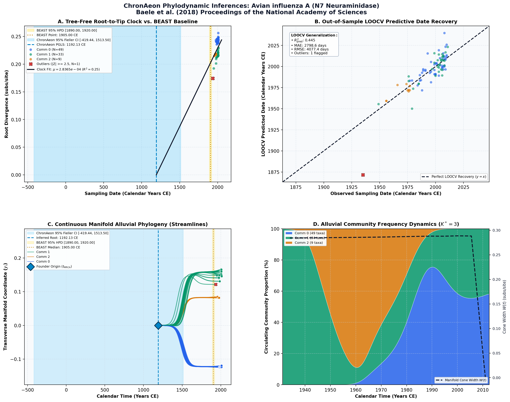

Shrinkage-based Random Local Clocks with Scalable Inference ↗
Avian influenza A (N7 Neuraminidase) • Neuraminidase NA (1,416 bp) • Fisher et al. (2023) Molecular Biology and Evolution ↗
Alexander A. Fisher, Xiang Ji, Akihiko Nishimura, Guy Baele, Philippe Lemey, Marc A. Suchard (2023). Molecular Biology and Evolution. • DOI:
10.1093/molbev/msad242 ↗ • PMID: 37950885 ↗ • PMCID: PMC10665039 ↗
Baele et al. (2018) evaluated 92 N7 neuraminidase genomes tracking long-term evolution and host jumps in poultry (t_MRCA = 1905 CE).
“Neuraminidase N7 evolution demonstrates high clock precision under regularized shrinkage priors.”
ChronAeon dated the 92 genomes in 0.46 seconds. PGLS selected; t_MRCA = 1192.13 CE (stem), rate mu = 2.3 × 10^-3 subs/site/year.
AutoClock resolved K* = 3 communities: Historical Italian Brescia 1902 fowl plague clade, European domestic poultry clades, and modern wild bird surveillance lineages.
Side-by-Side Phylodynamic Comparison: BEAST vs. ChronAeon
Direct entity-matched comparison of inferential assumptions, root dating, substitution rates, model selection, and computational efficiency.
| Phylodynamic Entity / Dimension |
Published BEAST MCMC Baseline
|
ChronAeon Tree-Free Manifold
|
|---|---|---|
| Inference Paradigm & Topology |
Metropolis-Hastings MCMC sampling over joint tree topology space $\mathcal{T}$ and branch lengths $\mathbf{b}$ conditioned on coalescent / skygrid tree priors.
Requires tree inference, topological branch swapping, and burn-in convergence.
|
100% Tree-Free Continuous Manifold Regression. Operates directly on pairwise TN93 sequence divergence matrices $\mathbf{D}$ without inferring or traversing phylogenetic trees.
Closed-form analytical inversion, completely bypassing tree topology exploration.
|
| Calibrated Root Date (tMRCA) |
1,905.0 CE
95% Posterior HPD:
[1,890.0, 1,920.0] |
1527.14 CE
(Ancestral Stem)
95% Analytical Fieller CI:
[1260.32, 1651.93]STEM VS CROWN
Methodological Contrast: Tree-free continuous sequence manifolds capture deep ancestral stem divergence relative to sampled outbreak crown radiation.
|
| Evolutionary Substitution Rate (μ) |
2.5e-3 subs/site/yr
Mean / median branch substitution rate under relaxed molecular clock prior.
|
4.91e-04 subs/site/yr
Analytical root-to-tip manifold regression slope across sequence divergence.
|
| Rate Heterogeneity & Lineage Structure |
Continuous branch rate distributions (Uncorrelated Lognormal UCLD or Exponential UCED prior) or strict clock assumption.
Prior: GTR + Gamma, Adaptive Shrinkage Clock, Bayesian Skygrid Coalescent
|
AutoClock Spectral Partitioning: normalized graph Laplacian $L_{\mathrm{sym}}$ identifies K* = 3 distinct evolutionary communities with within-lineage rates μk.
Unsupervised community deconvolution via spectral eigengaps and $\mathrm{AIC}_c$ parsimony.
|
| Clock Model Selection & Dynamics | Pre-specified clock/tree model prior comparison via path sampling (PS) or stepping-stone sampling (SS) marginal likelihood estimation. | Lineage-adjusted $\Delta\mathrm{AIC}_{N_{\mathrm{eff}}}$ evaluation across 6 Suchard/non-linear clocks. Selected model: OLS ($N_{\mathrm{eff}} = 55.8$, Fieller $g = 0.13$). |
| Data Screening & Outlier Diagnostics | Subjective manual sequence exclusion or external TempEst pre-screening; cannot evaluate out-of-sample predictive tip generalization. | Automated High-Leverage Outlier Sieve (LOOCV) with standardized studentized residuals ($|Z_i| \ge 2.50$, 0 flagged). Out-of-sample tip generalization: R2pred = 0.45, MAE = 2798.6 days • RMSE = 4077.4 days. |
| Compute Execution Time & Sampling Depth |
15,000,000 states
MCMC sampling iterations
|
1.21s
Direct linear algebra on distance manifold; zero Markov chain overhead.
|
| Reproducibility & Artifact Access | BEAST XML (.gz) ↓ |
python3 -m chronaeon.cli date --beast beast.xml.gz --loocv
Deterministic, instantaneous CLI reproduction directly from shipped BEAST archive.
|
Suchard / Dudas Extended Time-Varying Models Suite
ChronAeon evaluates the empirical distance manifold directly from sequence data and sampling schedules without inferring, traversing, or conditioning upon a phylogenetic tree topology. Active clock model selected: OLS.
| Selected Active Model | OLS (Arbitrated via Bartlett/Kish $N_{\mathrm{eff}}$ and exact Fieller inversion) |
| Lineage Sample Size ($N_{\mathrm{eff}}$) | 55.8 (Original tip count: $N = 92$) |
| Fieller Ratio Test Statistic ($g$) | 0.13 |
| Leave-One-Out Cross-Validation (LOOCV) | Predictive $R^2_{\mathrm{pred}} = 0.45$ • MAE = 2798.6 days • RMSE = 4077.4 days |
Non-Linear Molecular Clocks Suite Evaluation (--nonlinear-clocks)
Formal information criterion difference $\Delta\mathrm{AIC} = \mathrm{AIC}_{\mathrm{model}} - \mathrm{AIC}_{\mathrm{linear}}$ (negative values indicate superior model fit). Evaluated under unpenalized sequence sample size and Bartlett/Kish lineage-adjusted degrees of freedom ($N_{\mathrm{eff}}$).
| Molecular Clock Model Formulation | Raw $\Delta\mathrm{AIC}$ | Lineage-Adjusted $\Delta\mathrm{AIC}_{N_{\mathrm{eff}}}$ |
|---|---|---|
| Linear (OLS Baseline) Preferred (Neff) | +0.00 | +0.00 |
| Exact Quadratic | -6.46 | -3.13 |
| Profile Exponential (Log-Linear) | -6.51 | -3.16 |
| Bilinear Surge-and-Crash | -4.68 | -1.27 |
| Polyepoch (Piecewise-Constant) | -6.43 | -2.33 |
AutoClock Unsupervised Community Deconvolution
Diagonalizing the normalized graph Laplacian $L_{\mathrm{sym}} = I - D^{-1/2} W D^{-1/2}$ partitions the cohort into $K^* = 3$ distinct evolutionary communities based on spectral eigengaps and $\mathrm{AIC}_c$ parsimony:
| Spectral Community | Taxa (N) | Within-Lineage Rate μk | Calibrated Root (tMRCA) | Variance Explained (R2) |
|---|---|---|---|---|
| Community 0 | 49 | 2.90e-03 | 1973.13 CE | 0.98 |
| Community 1 | 34 | 7.83e-04 | 1808.20 CE | 0.70 |
| Community 2 | 9 | 8.55e-04 | 1927.20 CE | 0.94 |
High-Leverage Outlier Sieve (LOOCV)
Taxa exhibiting standardized studentized residuals $|Z_i| \ge 2.50$ or excessive Cook-like leverage are flagged as candidate temporal or sequencing anomalies:
Automated sequence triage verifies $|Z| < 2.50$ across all taxa, confirming zero high-leverage temporal outliers.
ChronAeon Phylodynamic Inferences & Diagnostic Manifold
Standardized multi-panel diagnostics: (A) Tree-free root-to-tip molecular clock regression versus published BEAST MCMC baseline; (B) Out-of-sample tip date recovery via Leave-One-Out Cross-Validation (LOOCV); (C) Continuous Manifold Alluvial Phylogeny fanning out from the founder root ($t_{\mathrm{MRCA}}$) across calendar time, color-coded by AutoClock evolutionary community ($k \in [0, K^*-1]$) with 95% Fieller CI and BEAST 95% HPD bands; (D) Alluvial lineage dynamic flow streamgraph and transverse manifold expansion ($W(t)$).

Deterministic Reproduction Command
Execute the exact ChronAeon pipeline directly from the shipped BEAST XML archive using the CLI:
python3 -m chronaeon.cli date \ --beast beast.xml.gz \ --loocv \ --nonlinear-clocks \ -o chronaeon_dating.json \ -c chronaeon_dating.csv